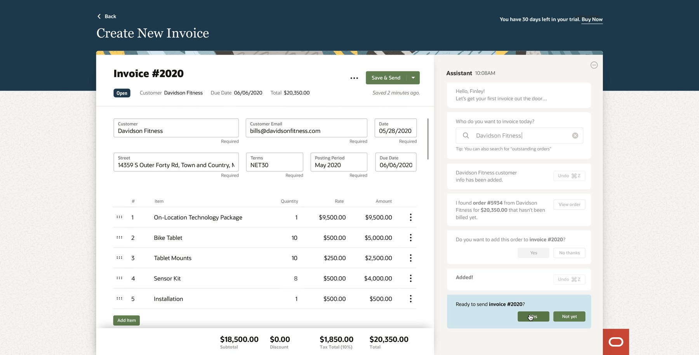
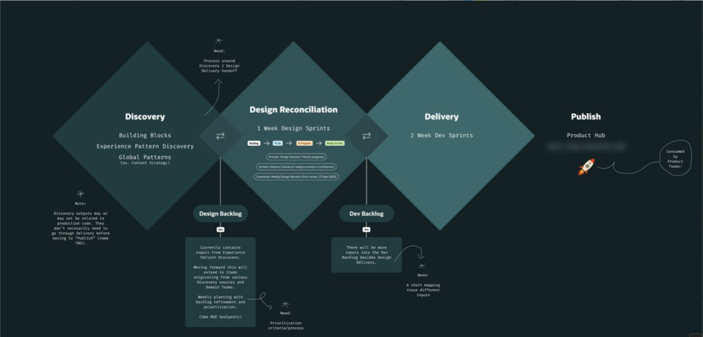
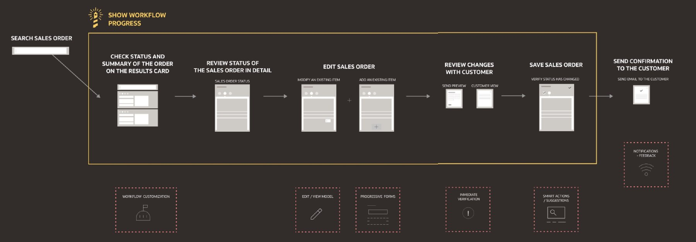
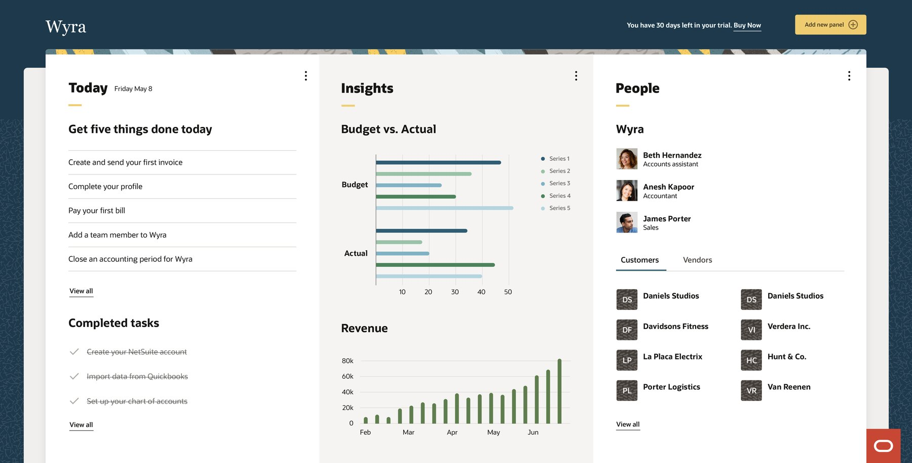
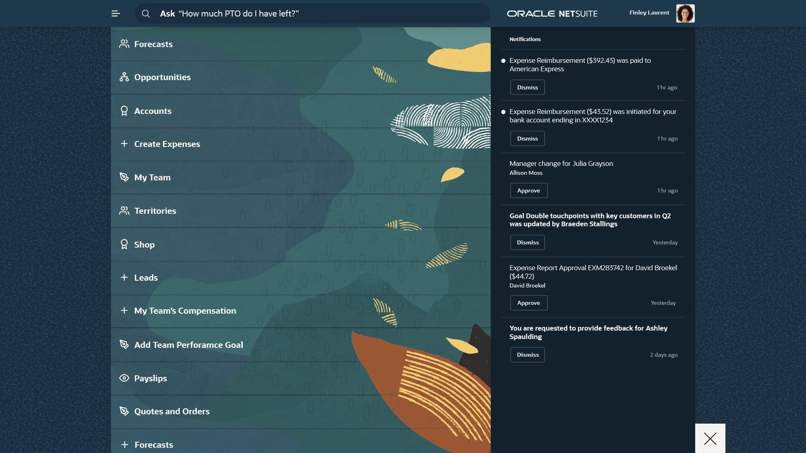
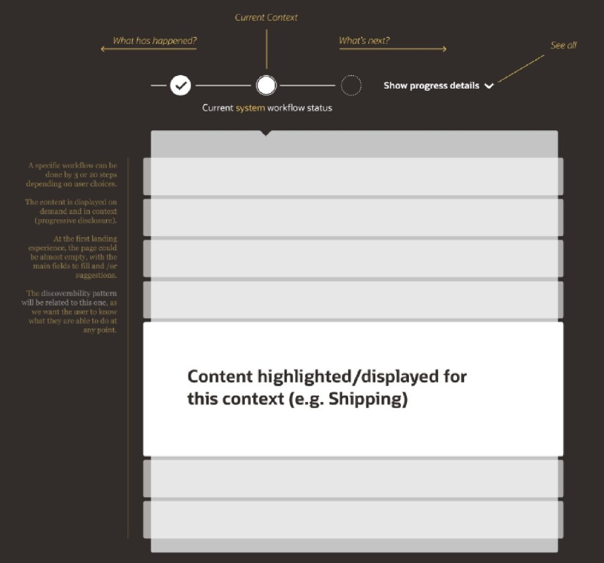

Defining Oracle's next-generation product concept from zero.

In 2020 I led product design for a strategic initiative inside Oracle NetSuite's Innovation Hub, known internally as “NetSuite Next.” Ten product designers reported to me, and we worked directly with Oracle's senior stakeholders.
Our job as the innovation team: define a North Star vision for the next generation of NetSuite, with the design principles and product strategy behind it, so domain teams had something concrete to build toward in their own areas.
Small companies need the core of an ERP without learning NetSuite, because NetSuite is built for far more complex businesses, and its depth becomes a barrier long before it becomes a benefit.
They also need a product that adapts to how they work, because no two small companies run the same way, and a fixed, step-by-step flow breaks the moment reality doesn’t match it.
To give every team the same customer to design for, we invented one. Wyra is a fast-growing US company of ten people that retrofits stationary bikes with smart features and sells tablets, sensors, installation and virtual training. Revenue is climbing, and Wyra needs to replace its accounting tool with an ERP before growth breaks it: accounting, inventory, customers and online sales.
Its CEO and founder, Finley, became our main persona. Her scenario: midway through updating the chart of accounts, a key customer calls to add three bikes to an order that has already partly shipped.
Before patterns, we agreed what the next generation should feel like. Five design principles, developed alongside Oracle's new Redwood design system:
Leading ten designers started with a team charter: a vision, a mission and four values. The one I’d keep anywhere: “Start with your own transparency and always assume the best intention in others.”
The team split into experience-pattern teams, each ideating through design sprints with a product manager, a domain expert, a researcher and a software engineer, plus stakeholder checkpoints. Each sprint moved through understanding (empathy map, scenario, problem statements), ideation (Lean UX canvas, crazy eights) and definition (user flow, wireflow, UI patterns).


Wyra’s home is organised around three panels: today’s tasks, insights and people. For a new company, “today” starts as five things to get done, from sending the first invoice to closing the first accounting period.

On the invoice screen (top of the page), the assistant works alongside the form. It fills in the customer, finds an order that hasn’t been billed, and asks before adding it. Every step shows an Undo, and Finley confirms before anything is sent.
The same idea runs through the shell: one search bar you can ask in plain language, and notifications you act on directly with Approve or Dismiss. That’s manage by exception. The product brings you what needs a decision.

On top of Redwood, we defined experience patterns any NetSuite team could reuse: manage by exception, progressive disclosure, smart assistance, task-oriented UI, show progress, create new, edit/view and storytelling dashboards.

Show Workflow Progress answers Finley’s need for context. A status line with three points: what has happened, where you are now, and what’s next.
The concept I defined in 2020 is still the model NetSuite Next runs on today, five years later.
Wyra gave every product team a common language and a user-centric starting point: one customer, one persona, the same problems to solve.